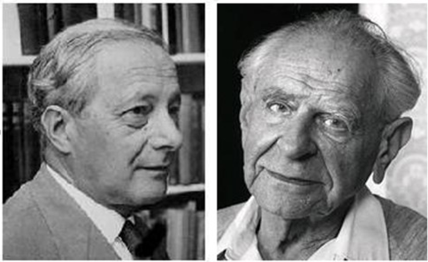

Michael Polanyi (L) and Karl Popper (R)I've been working on a joint paper with someone else about blockchain. One way the paper might develop would be to argue that the discussion of DAOs (decentralized autonomous organizations) using blockchain technology should now be cognisant of the chasm between two approaches to the philosophy of science in the 20th-century — that between Popper and Polanyi. Popper focuses on science as a form of discipline of the mind which produces more and more objective knowledge. He's also a disciplinarian in the normal sense of that word, or an intellectual authoritarian. He thinks the challenge is to codify what the scientific method is so that it can be insisted upon. This will then produce sanctioned scientific knowledge which will converge closer and closer to the objective truth. At the same time discourses that don't measure up to such a standard are marginalised as 'unscientific' in their endeavours to uncover the truth. The idea is that those who think that blockchain will now automate governance should understand why Popper's quest failed, because they're making the same mistake all over again — which is the idea that things that actually depend on a great deal of tacit knowledge, judgement and acculturation.
Polanyi didn't believe Popper's quest would work — which appears to have been proven right. Many very serious people who comment on science haven't got the memo, but there you go. These questions are hard and it's easy to think you understand things when you don't. As Haack puts it, Popper’s criterion sounded simple enough.
But in fact it never became entirely clear what, exactly, Popper’s criterion was, nor what, exactly, it was intended to rule out … nor – besides the honorific use of “science” – the motivation was for wanting a criterion of demarcation in the first place. … With the benefit of hindsight, it looks as if Popper’s criterion of demarcation proved so attractive to so many in part because it was amorphous – or rather, polymorphous -- enough to seem to serve a whole variety of agendas.
Polanyi's concerns were different. He had been an outstanding practicing scientist. And like Einstein with whom he'd worked in Berlin before moving to England on Hitler's accession to power, he was interested in the things that united science with other grand intellectual and spiritual quests. And, having pondered the question deeply, he felt that science was an intellectual system which, like the magic of a native tribe, was a self-supporting system of faith. True enough the protocols it embraced clearly generated increasingly useful knowledge where other systems did not, but one couldn't demonstrate why one had greater faith in it over other systems, from within the system, except circularly. Anyway, all that is by way of introduction to the table below that I thought I'd share for comment. And if anyone wants more on Polanyi v Popper, email me and I can send them to a larger piece I've written about here previously.
| Popper | Polanyi |
| Scientific method is not ‘instinctive’, nor the possession of all societies However, like markets, it is a social formation which, once forged has a certain sense of ‘naturalness’ to it with a power that tends to be self-reinforcing in the absence of excessive arbitrary power and social iconoclasm. | Science is one of the principal vehicles by which man’s spiritual nature is expressed.
|
| Scientific method is the engine of science | The engine of science is scientists expressing their spiritual nature having been acculturated into the hard-won norms and values of the scientific tradition — which itself is the product of a cultural labour going back centuries. |
The enemies of science are those within or outside of it who, through malice or ignorance, traduce and violate the scientific method. Particularly:
|
The enemies of science are all those who interfere with it living in its own “internal necessities”. Particularly:
|
To promote science and defend it against its enemies:
|
To promote science and defend it against its enemies:
|
| Science can be thought of as reason applied to experience (including the artificial experience generated by experiments) in such a way that reason comes progressively closer to reality or the truth. | No system of thought functions without belief in its foundations, or in the words of St Augustine, “unless you believe, you shall not understand”. However, those foundations then become subject to immanent critique. |
| The scientific method, applied at any point is the best guarantee we have of the validity of scientific knowledge. | Science is a fiduciary order in the sense implied in the above words. In addition, the whole body of science is vouchsafed not fundamentally, by the use of the scientific method, which cannot be codified, but by the best endeavours of scientists to honour their fiduciary duty to each other, to science and to society. They do this both in making their own contributions to the tapestry of scientific knowledge but also by challenging and cross checking each others’ work. One of the most difficult tasks in science is that of validating science across disciplines. This task is performed by scientists participating in science in neighbourhoods that overlap with their own professional expertise. This process is fragile and particularly vulnerable. |
| As a system of knowing, science is superior to systems of magic practiced by pre-modern tribes. As a product of reason, its superiority to these systems can be demonstrated according to reason. To this extent these two systems are commensurable. | We may have confidence in science’s superiority to systems of pre-modern magic, but claimed demonstrations of this fact cannot do so without somehow assuming the validity of what they claim to be proving. Science and pre-modern systems of magic are not commensurable systems. |
interesting. Obviously I am more in the mold of Polanyi than Popper, but in a way they are two sides of one church. Both of them are being religious about science, Polanyi in a more spiritual sense and Popper in the more prescriptive sense. Just as the bible has both the Ten Commandments and the Passion of Christ. Some people like their religion prescriptive, others more spiritual, and that seems the core difference on display here. Yet both belong to the same church. Is there any church that doesn't have both those sides?
Good point and good question. I don't know.
Popper wants THE church and science. "To promote science and defend it against its enemies:
> The scientific method must be codified from without (by philosopy)
> Friends of science should then defend it by policing the boundaries between it and pseudo-science "
Polanyi wants a group prayer - no need of a group of codifying philosophers. You'd want your kid to grow up like this wouldn't you? Self actualisation.
3 people are the church. Not 'the church'.
*
NG said "The idea is that those who think that blockchain will now automate governance should understand why Popper’s quest failed, because they’re making the same mistake all over again — which is the idea that things that actually depend on a great deal of tacit knowledge, judgement and acculturation."
Phrasing a bit challenging imho NG.
If nothing else, Snowden nails the fear of digital cash State Treasuries. Cash & Cryoto vs State Panopticon. This has not been technically nor polictically possible for thousands of years – until now.
We are all going to have to answer Snowden’s question, or be forcibly CBCD’d;
Central Bank Digital Currency’d
ES… “This is the question that I’d like Waller, that I’d like all of the Fed, and the Treasury, and the rest of the US government, to answer:
“Of all the things that might be centralized and nationalized in this poor man’s life, should it really be his money?”
“Your Money AND Your Life
Central Banks Digital Currencies will ransom our future
…” was of a transcript of a speech given by one Christopher J. Waller, a freshly-minted governor of the United States’ 51st and most powerful state, the Federal Reserve.
"The subject of this speech? CBDCs—…the acronym for Central Bank Digital Currencies—the newest danger cresting the public horizon.
…—whether it’s a minority report or just an attempt to pander to his hosts, the American Enterprise Institute.
“But given that Waller, an economist and a last-minute Trump appointee to the Fed, will serve his term until January 2030, we lunchtime readers might discern an effort to influence future policy, and specifically to influence the Fed’s much-heralded and still-forthcoming “discussion paper”—a group-authored text—on the topic of the costs and benefits of creating a CBDC.
“That is, on the costs and benefits of creating an American CBDC, because China has already announced one, as have about a dozen other countries including most recently Nigeria, which in early October will roll out the eNaira.
…
“But let’s return to close with that bank security guard, who after helping to close up the bank for the day probably goes off to work a second job, to make ends meet—at a gas station, say.
“Will a CBDC be helpful to him? Will an e-dollar improve his life, more than a cash dollar would, or a dollar-equivalent in Bitcoin, or in some stablecoin, or even inan FDIC-insured stablecoin?
“Let’s say that his doctor has told him that the sedentary or just-standing-around nature of his work at the bank has impacted his health, and contributed to dangerous weight gain. Our guard must cut down on sugar, and his private insurance company—which he’s been publicly mandated to deal with—now starts tracking his pre-diabetic condition and passes data on that condition on to the systems that control his CBDC wallet, so that the next time he goes to the deli and tries to buy some candy, he’s rejected—he can’t—his wallet just refuses to pay, even if it was his intention to buy that candy for his granddaughter.
“Or, let’s say that one of his e-dollars, which he received as a tip at his gas station job, happens to be later registered by a central authority as having been used, by its previous possessor, to execute a suspicious transaction, whether it was a drug deal or a donation to a totally innocent and in fact totally life-affirming charity operating in a foreign country deemed hostile to US foreign policy, and so it becomes frozen and even has to be “civilly” forfeited. How will our beleagured guard get it back? Will he ever be able to prove that said e-dollar is legitimately his and retake possession of it, and how much would that proof ultimately cost him?
“Our guard earns his living with his labor—he earns it with his body, and yet by the time that body inevitably breaks down, will he have amassed enough of a grubstake to comfortably retire? And if not, can he ever hope to rely on the State’s benevolent, or even adequate, provision—for his welfare, his care, his healing?
“This is the question that I’d like Waller, that I’d like all of the Fed, and the Treasury, and the rest of the US government, to answer:
“Of all the things that might be centralized and nationalized in this poor man’s life, should it really be his money?”
https://edwardsnowden.substack.com/p/cbdcs
Answer: Sortition.
And this just popped up.
Are the San of the Kalahari Desert in southern Africa using Popper or Polanyi as the philosophy of science. And what of Pinker & rationality?
"Why doesn’t rationality seem to matter anymore?
"It can be fixed, Steven Pinker argues, and if we don’t our democracy and environment may be at stake
Steven Pinker
...
"The San of the Kalahari Desert in southern Africa are one of the world’s oldest peoples, and their foraging lifestyle, maintained until recently, offers a glimpse of the ways in which humans spent most of their existence. Hunter-gatherers don’t just chuck spears at passing animals or help themselves to fruit and nuts growing around them. The tracking scientist Louis Liebenberg, who has worked with the San for decades, has described how they owe their survival to a scientific mindset. They reason their way from fragmentary data to remote conclusions with an intuitive grasp of logic, critical thinking, statistical reasoning, correlation and causation, and game theory.
"The San track fleeing animals from their hoofprints, effluvia, and other spoor. They distinguish dozens of species by the shapes and spacing of their tracks, aided by their grasp of cause and effect. They may infer that a pointed track comes from an agile springbok, which needs a good grip, whereas a flat-footed track comes from a heavy kudu, which has to support its weight. They then make syllogistic deductions: Steenbok and duiker can be run down in the rainy season because the wet sand forces open their hooves and stiffens their joints; kudu and eland can be run down in the dry season because they tire easily in loose sand.
"The San also engage in critical thinking. They know not to trust first impressions and appreciate the dangers of seeing what they want to see. Nor will they accept arguments from authority: Anyone, including a young upstart, may shoot down a conjecture or come up with his own until a consensus emerges from the disputation.
" Another critical faculty exercised by the San is distinguishing causation from correlation. Liebenberg recalls: “One tracker, Boroh// xao, told me that when the [lark] sings, it dries out the soil, making the roots good to eat. Afterwards, !Nate and /Uase told me that Boroh// xao was wrong — it is not the bird that dries out the soil, it is the sun that dries out the soil. The bird is only telling them that the soil will dry out in the coming months and that it is the time of the year when the roots are good to eat.”
"Yet for all the deadly effectiveness of the San’s technology, they have survived in an unforgiving desert for more than a hundred thousand years without exterminating the animals they depend on. During a drought, they think ahead to what would happen if they killed the last plant or animal of its kind, and they spare members of the threatened species. They tailor conservation plans to the vulnerabilities of plants, which cannot migrate but recover quickly when the rains return, and animals, which can survive a drought but build back numbers slowly.
"The sapience of the San makes the puzzle of human rationality acute. Despite our ancient capacity for reason, today we are flooded with reminders of the fallacies and follies of our fellows. Three quarters of Americans believe in at least one phenomenon that defies the laws of science, including psychic healing (55 percent), extrasensory perception (41 percent), haunted houses (37 percent), and ghosts (32 percent) ..."
https://news.harvard.edu/gazette/story/2021/09/an-excerpt-from-steven-pinkers-latest-book-rationality/
And next - the serendipity...
Via Scott Alexander via
"Céline Gounder, MD, ScM, FIDSA
@celinegounder
1/ Trust in scientists predicts whether people are willing to be vaccinated & whether they support masking & other COVID mitigation measures. https://pnas.org/content/118/40/e2108576118…
(h/t @EricTopol)
*
"Trust in scientists in times of pandemic: Panel evidence from 12 countries
https://www.pnas.org/content/118/40/e2108576118